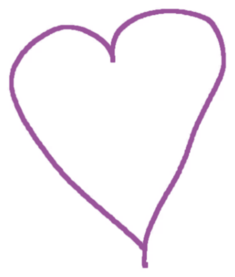
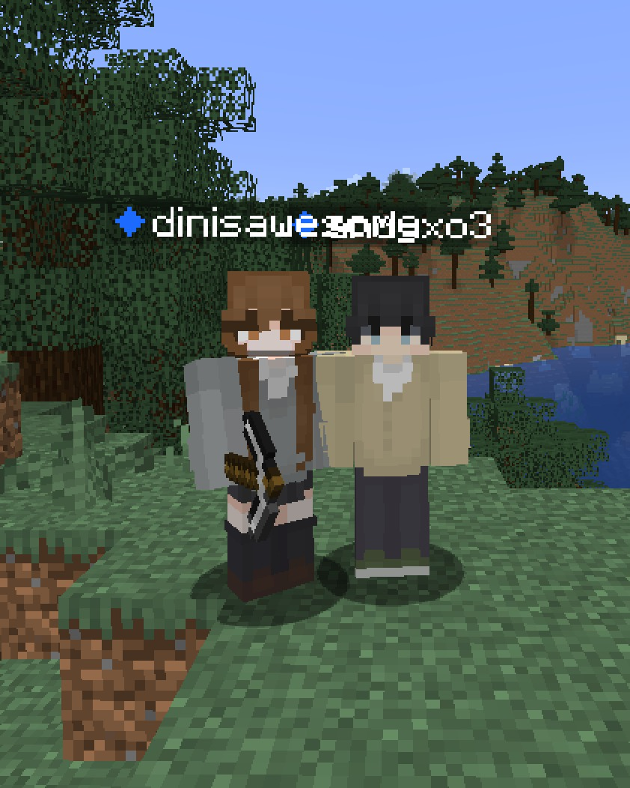
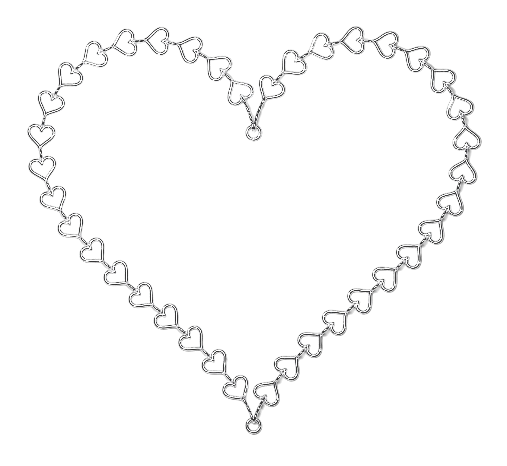
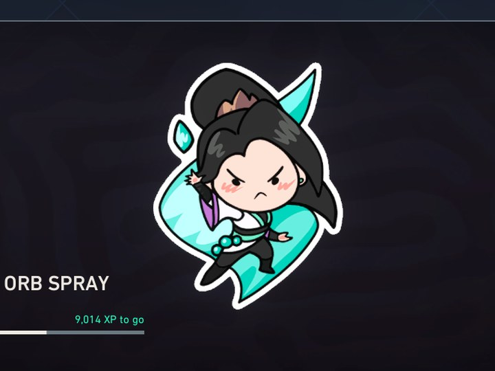
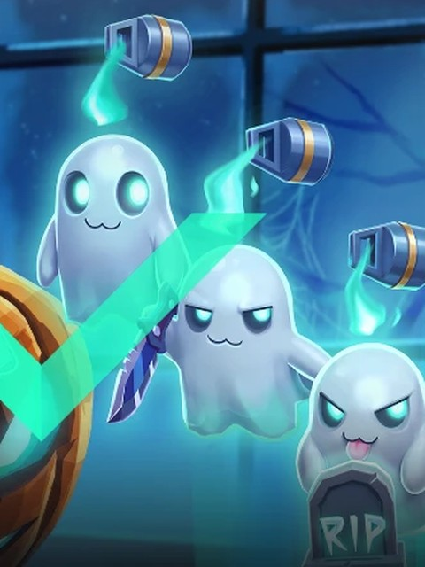
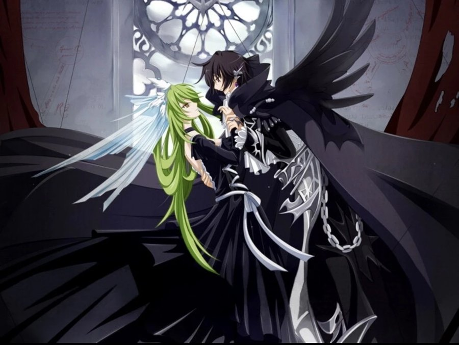
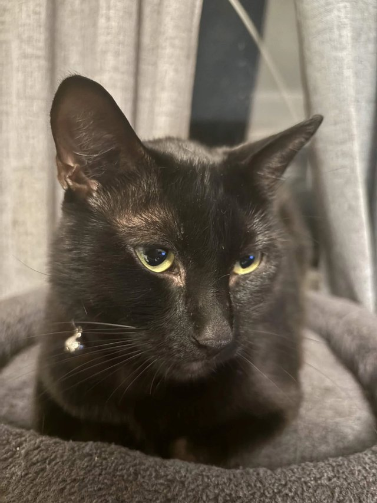

to din lopez
hi baby :3
from andy sim

10 things that i love about my baby <3
tap a heart to open it

i got you a little gift, my love :p


i love you so much, my bunny
i got you the ghost bundle thingy and the battlepass too idk if you even wanted it so gulp

may i be your boyfriend?

i love you forever and always ♡
i pinky promise to love and cherish your pretty little heart for as long as you’ll let me. you’re genuinely the sweetest girl i’ve ever met and i never want to lose what we have. i’m so glad you said yes and i promise to do everything i can to make you feel loved, appreciated, and happy. i won’t leave your side even on the hardest days because i don’t just want you when things are easy, i want you through all of it. i want to grow with you, make memories with you, and love you for as long as you’ll have me. i want this to be forever, din :3